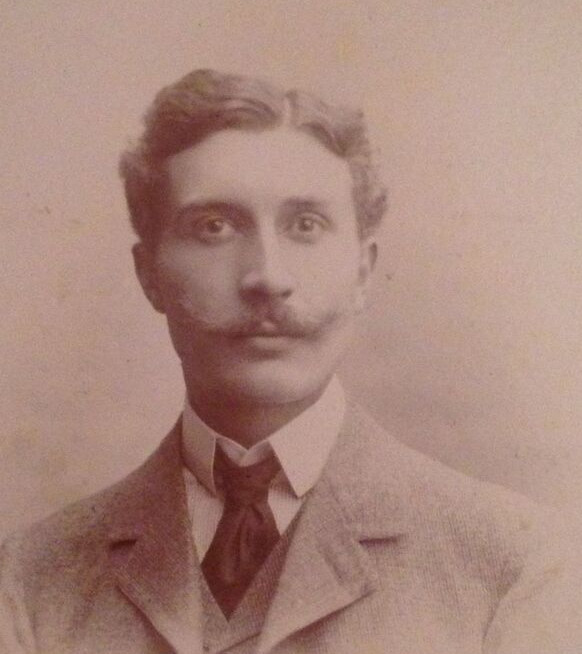

Charles Henri Amédée Joseph DROULERS — Né le 29/03/1872 à Roubaix — Décédé le 19/02/1945 à Chenoise
Charles Henri Amédée Joseph DROULERS
Né le 29/03/1872 à Roubaix
Décédé le 19/02/1945 à Chenoise
Résumé
Charles Henri Amédée Joseph Droulers naît le 29 mars 1872 à Roubaix, fils de Charles Henri Droulers (1838–1899), distillateur et président du Tribunal de commerce de Roubaix, et de Joséphine Prouvost (1845–1919), fille du fondateur du Peignage Amédée Prouvost. Il est le frère aîné de Madeleine Droulers (1883–1974), qui épousera Eugène Wattinne, et donc l'oncle maternel d'Agnès Wattinne.
Docteur en droit, il est avocat à la cour d'appel de Paris de 1894 à 1898, avant de se consacrer à la gestion d'intérêts industriels : il dirige la distillerie familiale de Roubaix, devient administrateur délégué des Mines de Potack en Galicie et administrateur de la Société de peignage et de la Société des levures de grains. Le 5 février 1902, il épouse à Paris Madeleine Thureau-Dangin (1878–1954), fille de l'académicien Paul Thureau-Dangin.
Engagé dans la vie sociale et politique du Nord, il est un ami et collaborateur de l'abbé Lemire, le député fondateur des jardins ouvriers. Il préside les Jardins Populaires de Roubaix dès leur fondation en 1906 : en 1920, l'association compte 8 groupes et 236 jardins dans la ville. Il est également administrateur de la Ligue du coin de terre et du foyer, dont il assure le secrétariat rapporteur des congrès d'après-guerre, président-fondateur de la Fraternelle des combattants roubaissiens, et président du Comité d'études familiales. Il publie en 1929 Chemin faisant avec l'abbé Lemire, étude sur l'action politique et sociale du député d'Hazebrouck. En 1914, il se présente sans succès aux élections législatives dans la 7e circonscription de Lille, face au député sortant Jules Guesde. Il devient également rédacteur parlementaire au Journal de Roubaix.
Grand voyageur et homme de lettres, cousin germain d'Amédée Prouvost, il préside la section roubaisienne de la Société de géographie de Lille. Son œuvre littéraire est abondante : poésie (Les Rimes de Fer, Les mansuétudes, Feux Errants), biographies (Le marquis de Morès, 1858–1896, Plon, 1932), études de littérature régionale (Les Poètes de la Flandre française et l'Espagne, avec Léon Bocquet). Son essai La cité de Pascal (1928), paru d'abord dans La Revue universelle, lui vaut le prix Marcelin Guérin de l'Académie française en 1929.
Il meurt le 19 février 1945 à Chenoise, à 72 ans.
Sources :
- Wikipédia, Charles Droulers
- Catalogue collectif de France (BnF), notice Roubaix s'amuse…
- Thierry Prouvost, Prouvost-religion
- Biographie de Charles Droulers par Agnès Wattinne, vers 1985 (archives familiales)
{kind=link}

{kind=link}
{kind=link}
{kind=link}
{kind=link}
{kind=link}
{kind=link}
📷 Cliquez pour voir 7 photo(s)